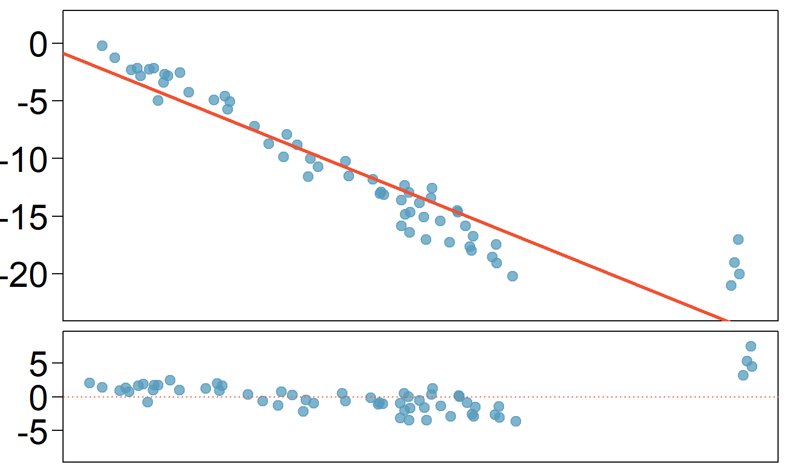
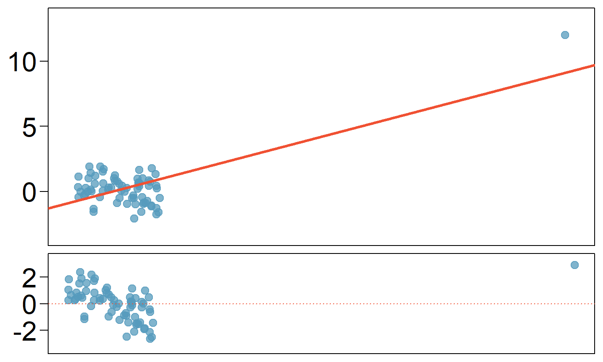
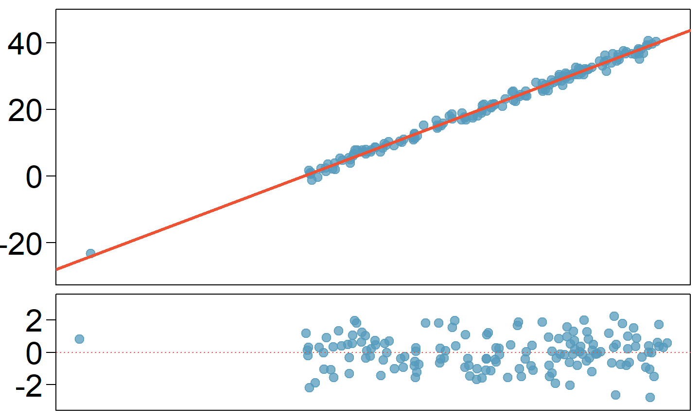
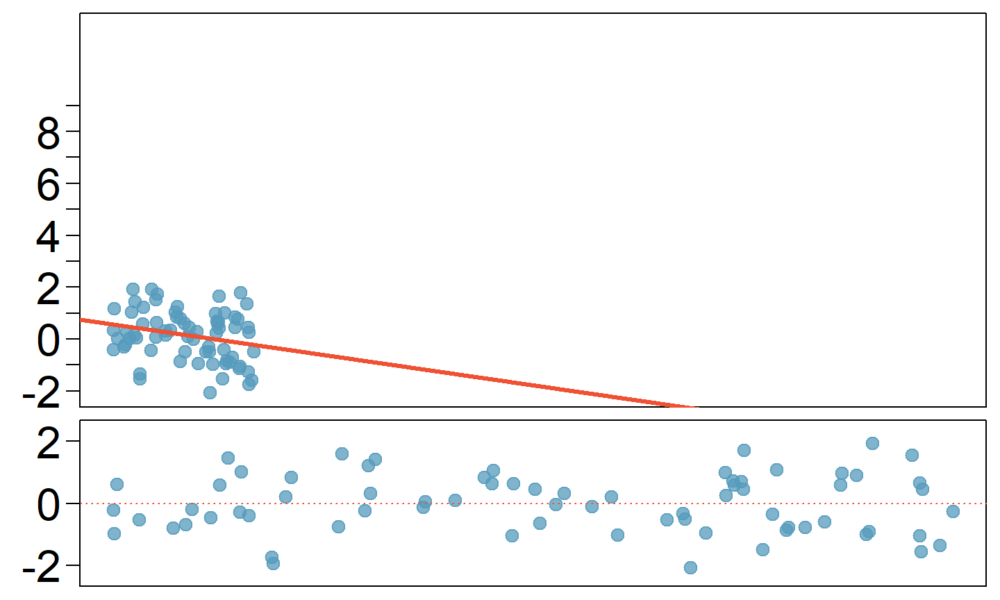

These notes use content from OpenIntro Statistics Slides by
Mine Cetinkaya-Rundel.
These notes use content from OpenIntro Statistics Slides by
Mine Cetinkaya-Rundel.
How do outliers influence the least squares in this plot?
To answer this question think of where the regression line would be with and without the outlier(s). Without the outliers the regression line would be steeper, and lie closer to the larger group of observations. With the outliers the line is pulled up and away from some of the observations in the larger group.

How do outliers influence the least squares in this plot?

How do outliers influence the least squares in this plot?
Without the outlier there is no evident relationship between \(x\) and \(y\).

Outliers are points that lie away from the cloud of points.
Outliers that lie horizontally away from the center of the cloud are called high leverage points.
High leverage points that actually influence the \(\underline{\text{slope}}\) of the regression line are called influential points.
In order to determine if a point is influential, visualize the regression line with and without the point. Does the slope of the line change considerably? If so, then the point is influential. If not, then it’s not an influential point.
Data are available on the log of the surface temperature and the log of the light intensity of 47 stars in the star cluster CYG OB1.


Which of the below best describes the outlier?
Influential
High Leverage
None of the above
There are no outliers

Which of the below best describes the outlier?
Influential
None of the above
There are no outliers

Does this outlier influence the slope of the regression line?

Does this outlier influence the slope of the regression line?
Not much…

Which of following is \(\underline{true}\)?
Influential points always change the intercept of the regression line.
Influential points always reduce \(R^2\).
It is much more likely for a low leverage point to be influential, than a high leverage point.
When the data set includes an influential point, the relationship between the explanatory variable and the response variable is always nonlinear.
None of the above.
Which of following is \(\underline{true}\)?
Influential points always change the intercept of the regression line.
Influential points always reduce \(R^2\).
It is much more likely for a low leverage point to be influential, than a high leverage point.
When the data set includes an influential point, the relationship between the explanatory variable and the response variable is always nonlinear.
None of the above.